专题2.5 有理数的乘除运算

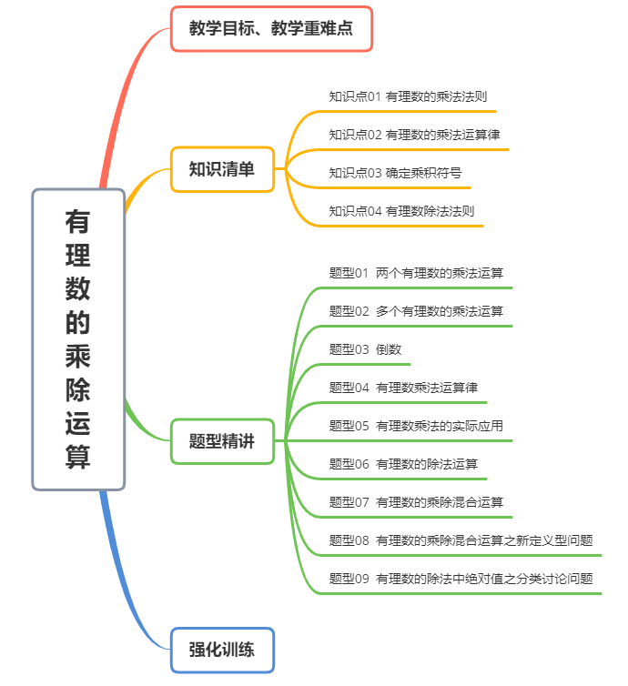

教学目标 | 1. 理解有理数乘法法则，能熟练运用法则进行有理数乘法运算。 2. 探索并掌握有理数乘法运算律，如交换律、结合律和分配律 ，并能利用运算律简化运算。 3. 经历有理数乘法法则及运算律的探索过程，提升观察、归纳、猜想、验证等思维能力。 |
教学重难点 | 1.重点 （1）有理数乘法法则的理解与运用，准确确定积的符号与绝对值。 （2）掌握有理数乘法的运算律，能正确运用运算律进行简便运算。 2.难点 （1）理解有理数乘法中负数参与运算时积的符号确定，以及多个有理数相乘时积的符号判断。 （2）根据具体算式特点，灵活选择合适的乘法运算律进行简便计算 。 |

知识点01 有理数的乘法法则
（1）两数相乘，同号得正，异号得负，并把绝对值相乘.
（2）任何数同0相乘，都得0.
（3）多个有理数相乘的法则：①几个不等于0的数相乘，积的符号由负因数的个数决定，当负因数有奇
数个时，积为负；当负因数有偶数个时，积为正．②几个数相乘，有一个因数为0，积就为0．
倒数：乘积是1的两个有理数互为倒数.
【注意】：①0没有倒数；②倒数等于它本身的数有1和-1.
【即学即练1】2025的倒数是 ．
【答案】
【分析】本题主要考查了倒数是定义，根据乘积为1的两个数互为倒数，进行求解即可．
【详解】解：2025的倒数是，
故答案为：．
【即学即练2】计算：
(1) ； (2)
； (2) ．
．
【答案】(1)
(2)
【分析】本题考查了有理数的乘法，两数相乘，同号得正，异号得负，并把绝对值相乘．
（1）根据有理数的乘法法则进行计算即可；
（2）根据有理数的乘法法则进行计算即可．
【详解】（1）解：
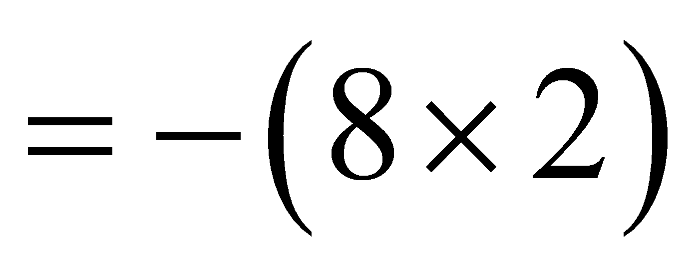
 ；
；
（2）解：
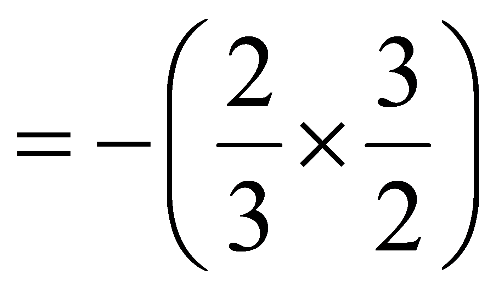
 ．
．
【即学即练3】计算．
(1)
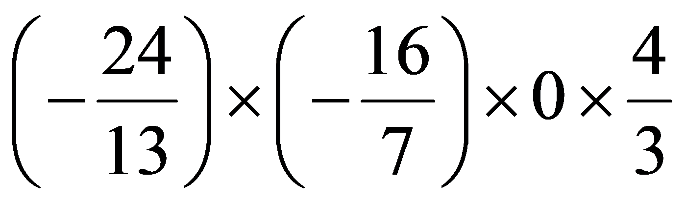
； (2)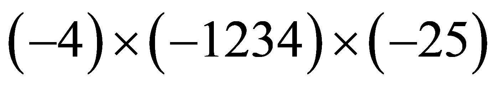
； (3) ；
；【答案】(1)0
(2)
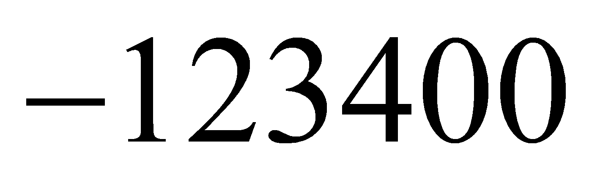
(3)
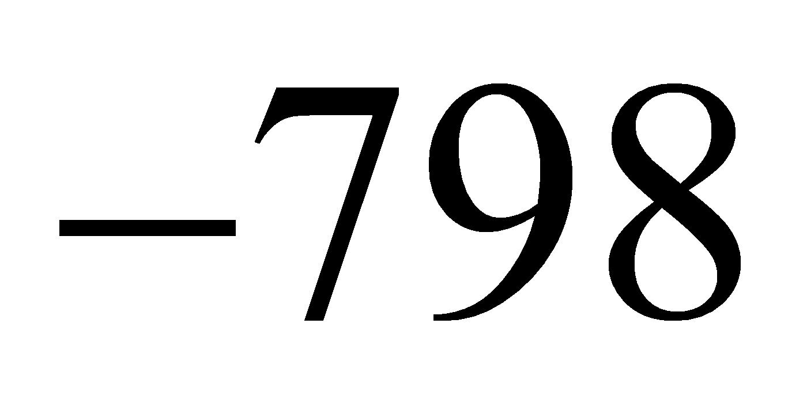
【分析】本题考查有理数的乘除混合运算．掌握各运算法则是解题关键．
（1）任何数与0相乘都等于0，所以结果为0．
（2）利用乘法交换律先算 与
与 的积，再乘
的积，再乘
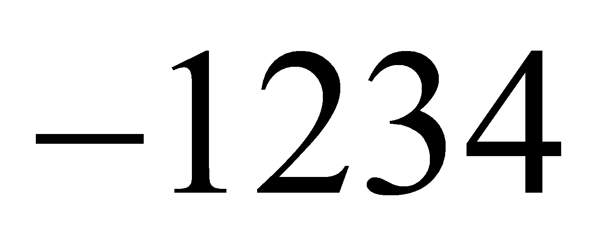
．（3）将
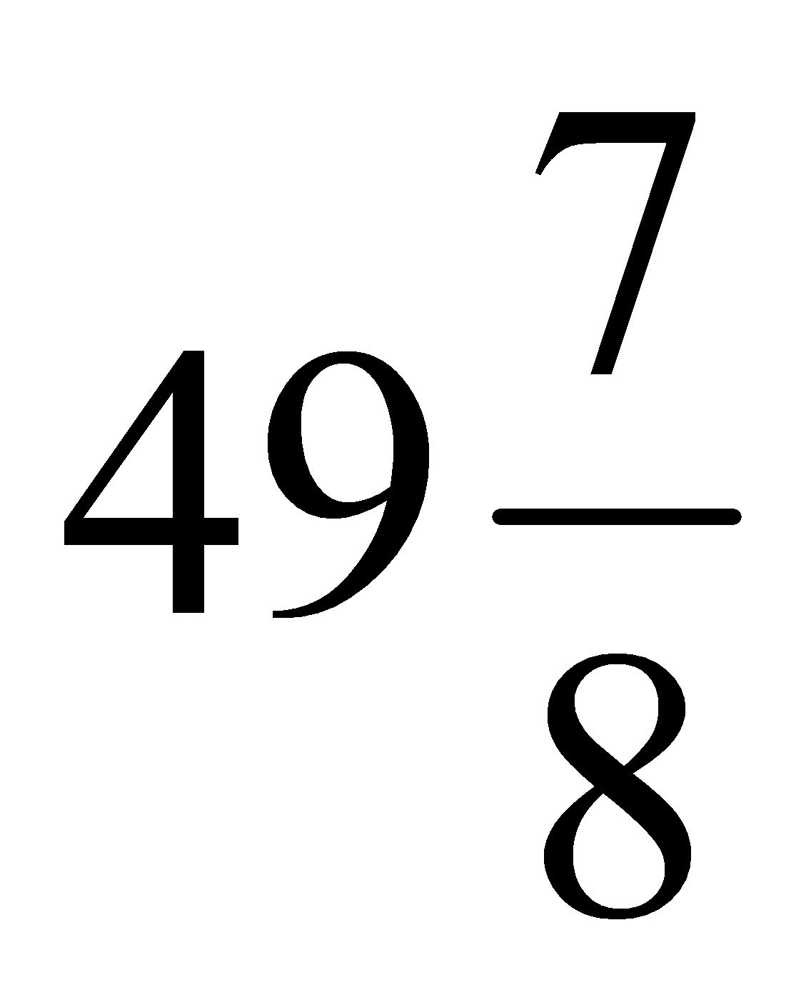
化为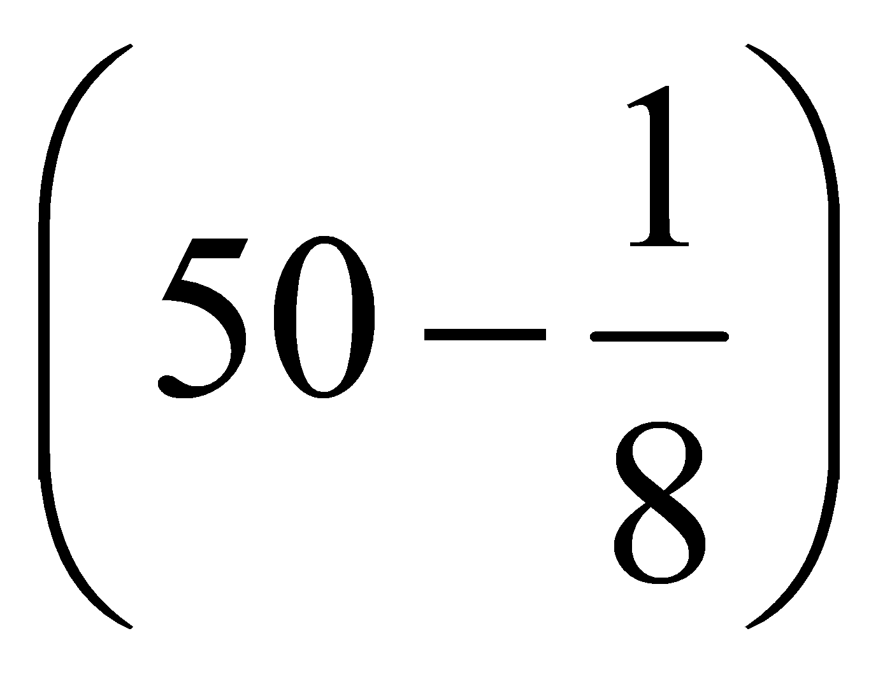
后与相乘并约分计算．【详解】（1）解：原式 ；
；
（2）解：原式
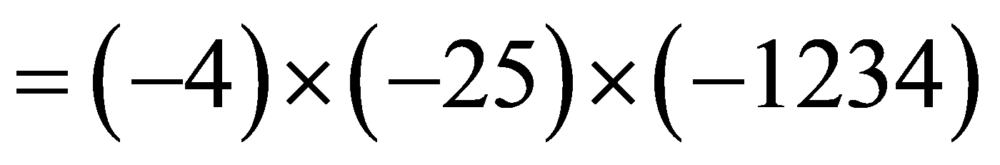
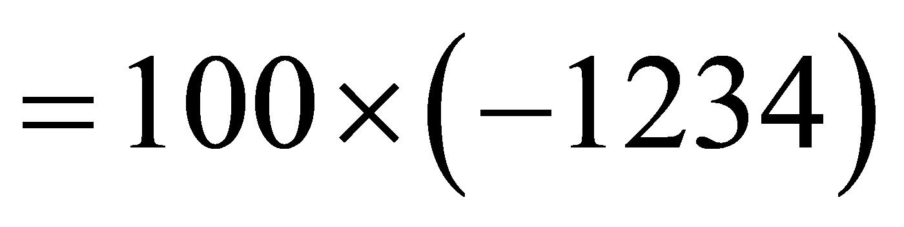
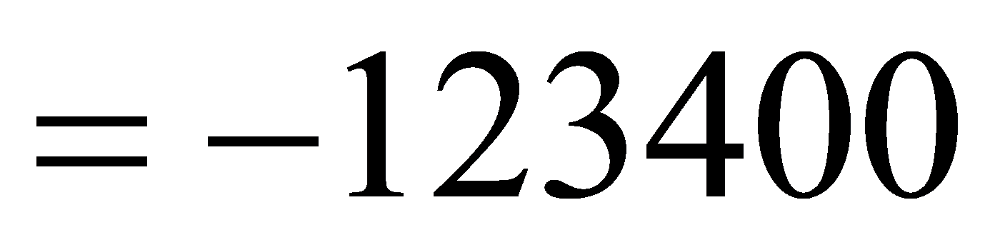
；（3）解：原式
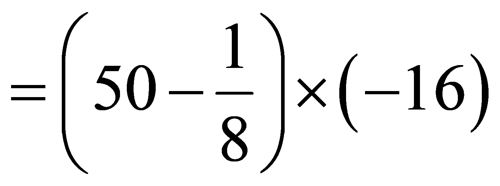
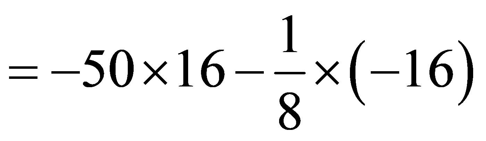
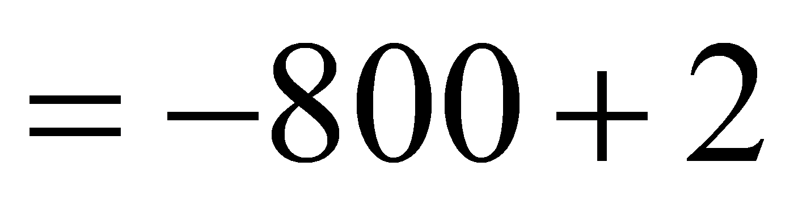
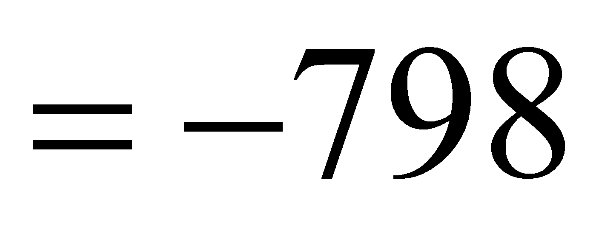
．知识点02 有理数的乘法运算律
（1）乘法交换律： ；（2）乘法结合律：
；（2）乘法结合律： ；（3）乘法分配律：
；（3）乘法分配律： ．
．
【即学即练1】下列运算中用的运算律是（ ）
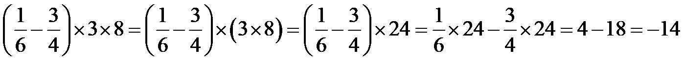
．A．乘法结合律及分配律
B．乘法交换律及分配律
C．乘法交换律及乘法结合律
D．分配律及加法结合律
【答案】A
【知识点】有理数乘法运算律
【分析】本题考查有理数的混合运算，乘法运算律，熟练掌握乘法运算律是解题的关键．
根据题干中的解题过程，结合乘法运算律即可得出答案．
【详解】解：
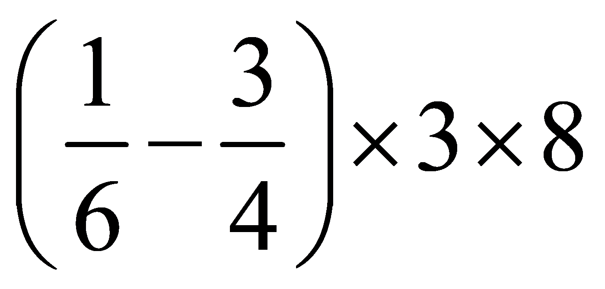
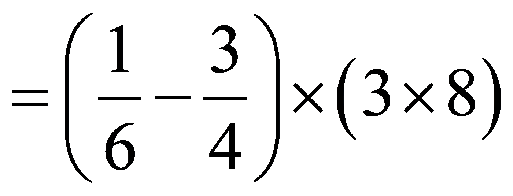
（乘法结合律）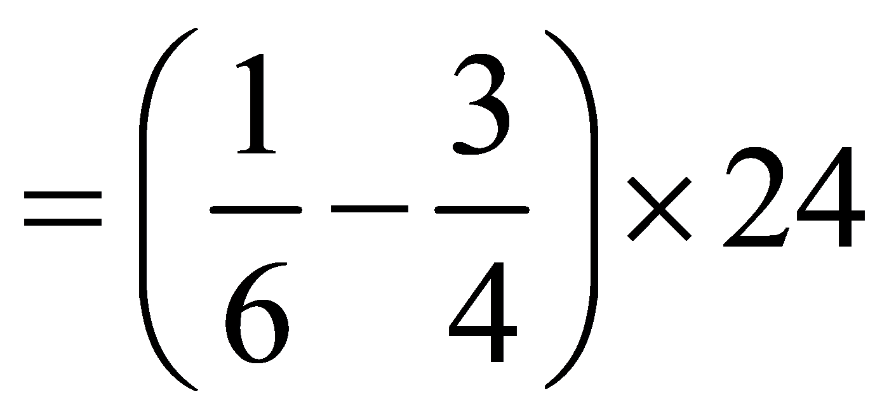
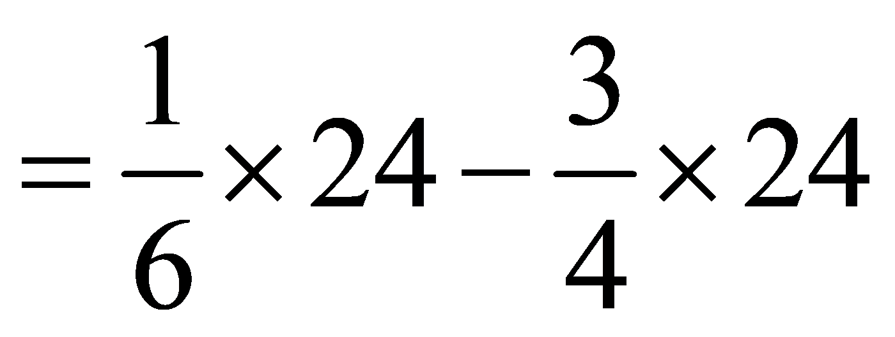
（乘法分配律）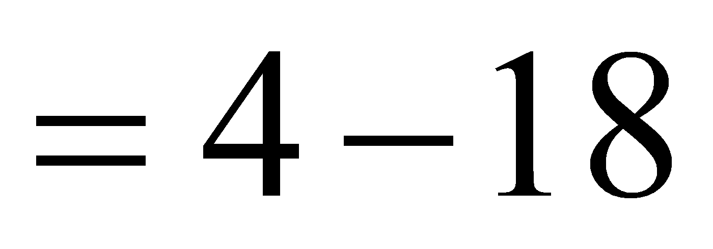

∴运用的运算律为乘法结合律及分配律，
故选：A．
【即学即练2】计算：
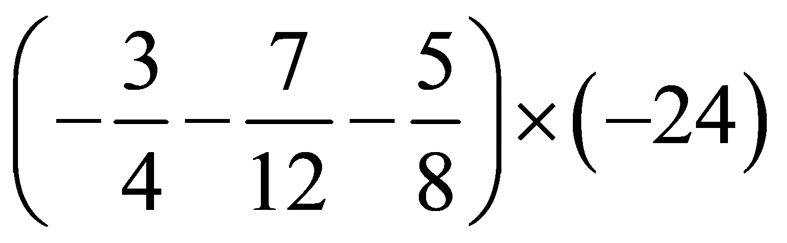
【答案】47
【知识点】有理数乘法运算律
【分析】本题考查了有理数的乘法分配律，解题的关键是掌握运算法则和运算顺序．
利用有理数的乘法分配律求解即可．
【详解】
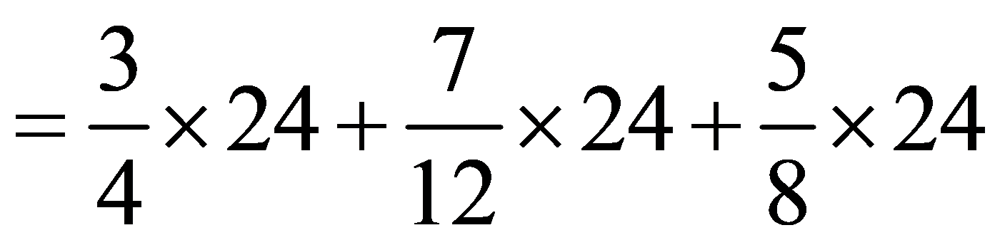
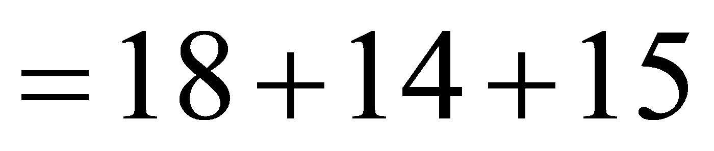
 ．
．
知识点03 确定乘积符号
（1）若a＜0，b＞0，则ab < 0；（2）若a＜0，b＜0，则ab > 0；（3）若ab＞0，则a、b同号；
（4）若ab＜0，则a、b异号；（5）若ab = 0，则a、b中至少有一个数为0.
【即学即练1】下列式子中，积的符号为负的是（ ）
A． B．
B．
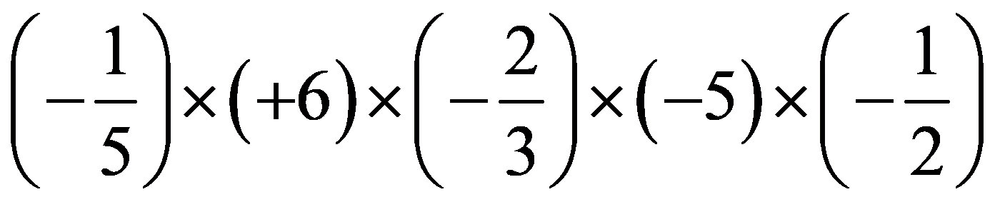
C．
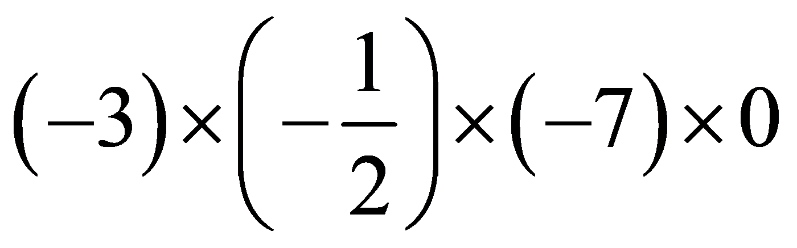
D．
【答案】D
【分析】本题考查有理数的乘法运算，根据有理数乘法的运算法则，积的符号由因数中负号的个数决定，奇负偶正，进行判断即可．
【详解】解：A、有2个负号，积的符号为正，不符合题意；
B、有4个负号，积的符号为正，不符合题意；
C、积为0，不符合题意；
D、有3个负号，积的符号为负，符合题意；
故选D．
【即学即练2】对于 ，若
，若 ，则其结果为（ ）
，则其结果为（ ）
A．正数 B．负数 C．0 D．不能确定
【答案】B
【分析】考查有理数的乘法运算，熟练掌握有理数的乘法运算符号法则是解题关键．
根据负数的乘法符号规律：奇数个负数相乘结果为负数，偶数个负数相乘结果为正数，即可判断．
【详解】解：由题意 个
个 相乘，当时，有奇数个负数相乘，所以结果为负．
相乘，当时，有奇数个负数相乘，所以结果为负．
故选：B．
知识点04 有理数除法法则
◆除以一个不为0的数，等于乘以这个数的倒数
◆两数相除（被除数不为0），同号得正，异号得负，并把绝对值相除.
【注意】：0除以任何不为0的数，都得0.
【即学即练1】计算：
(1)
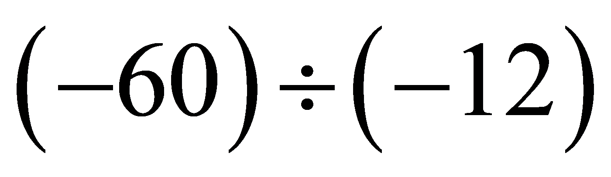
； (2) ； (3)
； (3)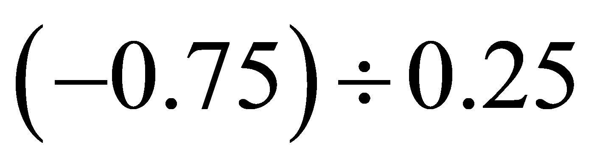
； (4) ．
．【答案】(1)5
(2)
(3)
(4)36
【知识点】有理数的除法运算
【分析】本题考查了有理数的除法，熟练掌握有理数除法计算法则是解答本题的关键．
（1）根据有理数除法法则，两数相除，同号得正，异号得负，并把绝对值相除；
（2）根据有理数除法法则，除以一个不等于0的数等于乘以这个数的倒数，即可解答；
（3）根据有理数除法法则，两数相除，同号得正，异号得负，并把绝对值相除；
（4）根据有理数除法法则，除以一个不等于0的数等于乘以这个数的倒数，即可解答；
【详解】（1）解：原式
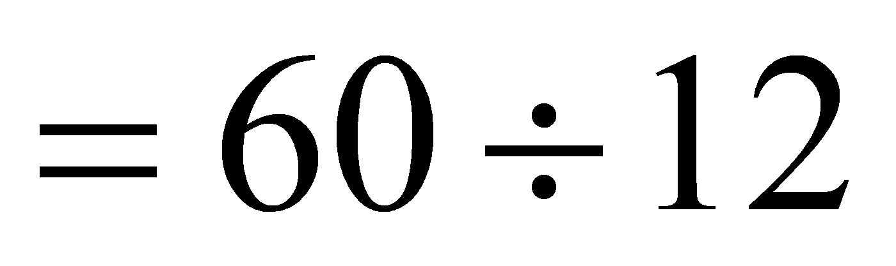
 ；
；
（2）解：原式
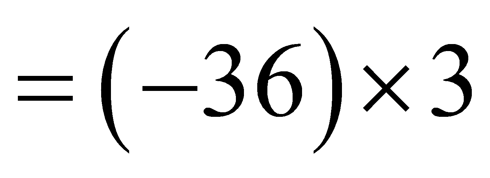
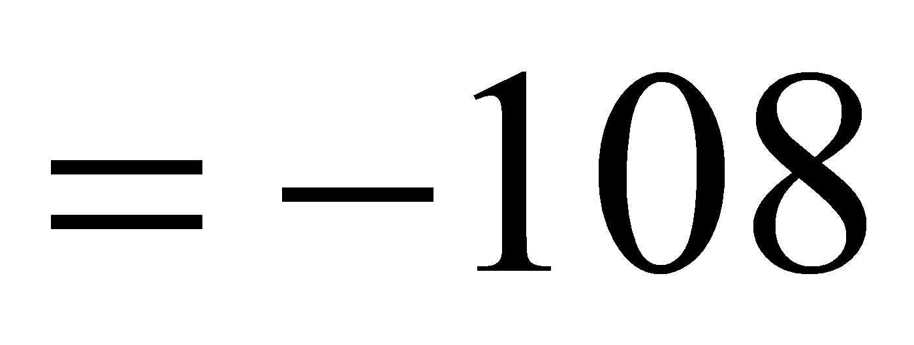
；（3）解：原式
 ；
；
（4）解：原式
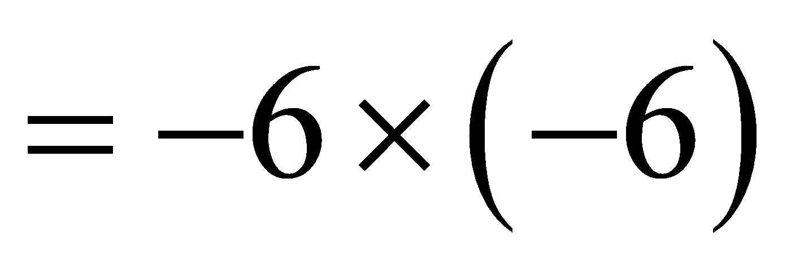
 ．
．
【即学即练2】计算：
(1)
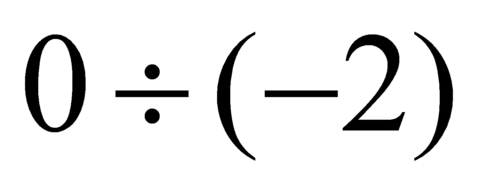
； (2) ； (3)
； (3)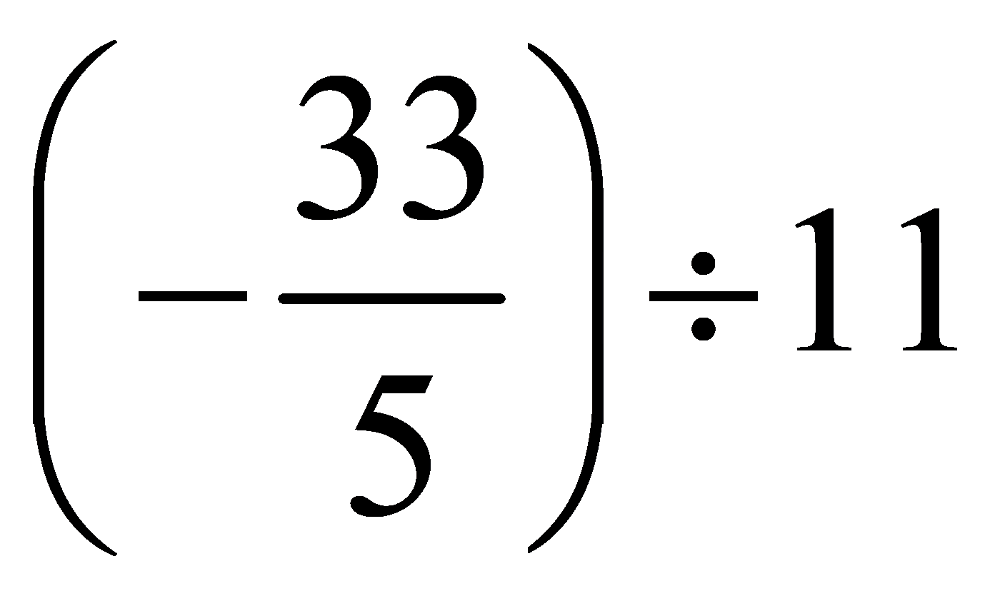
； (4) ．
．【答案】(1)
(2)
(3)
(4)
【知识点】有理数的除法运算
【分析】本题考查有理数的除法运算．根据有理数的除法运算法则，先确定结果符号，再计算数值．
【详解】（1）解：
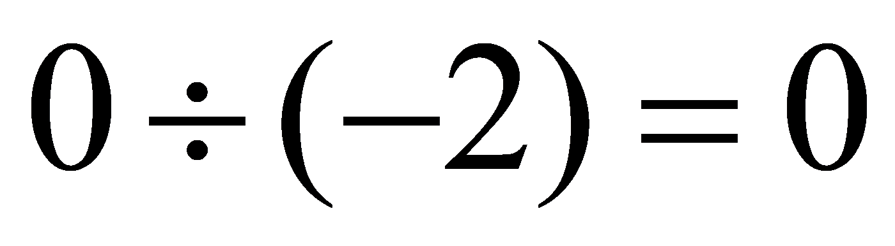
；（2）解：
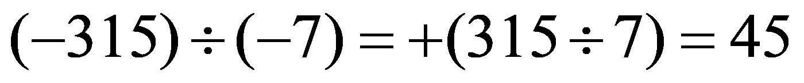
；（3）解：
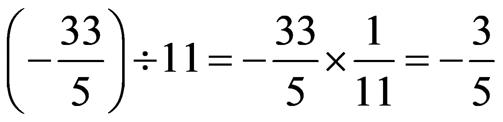
；（4）解：
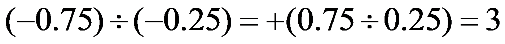
．
题型01 两个有理数的乘法运算
【典例1】计算：
(1) ；
；
(2) ；
；
(3)
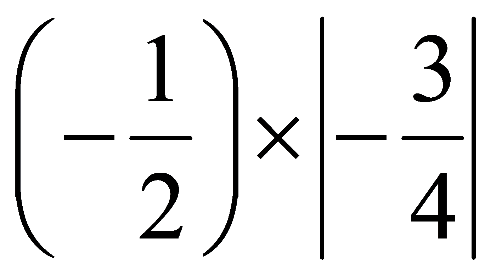
；(4)
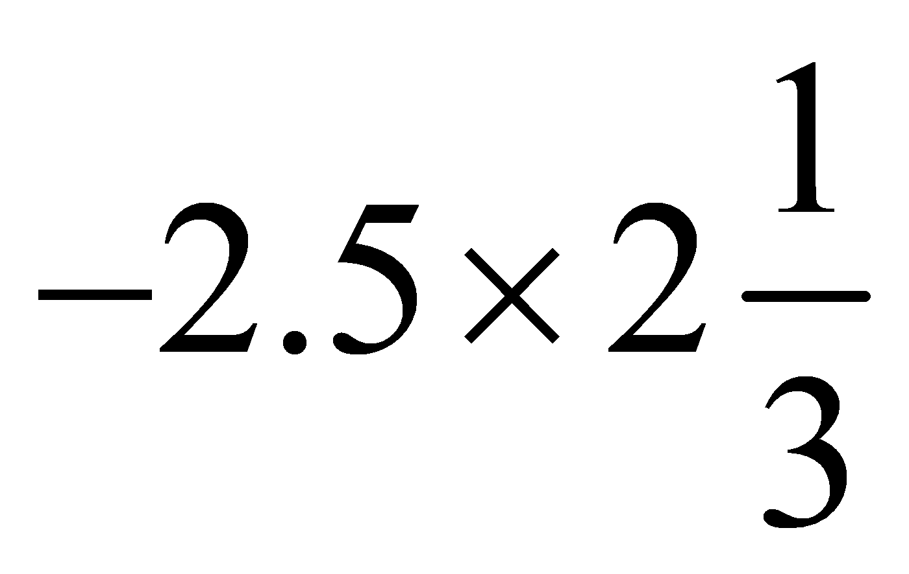
．【答案】(1)2
(2)0
(3)
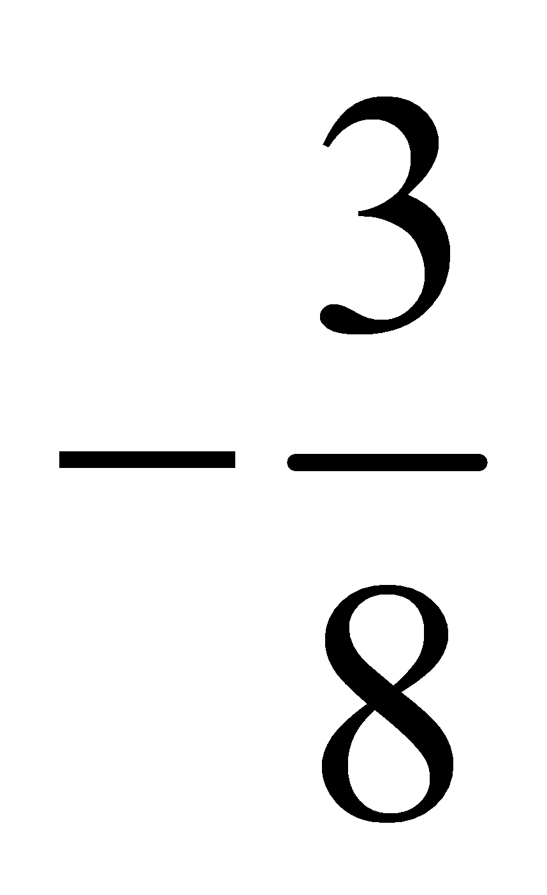
(4)
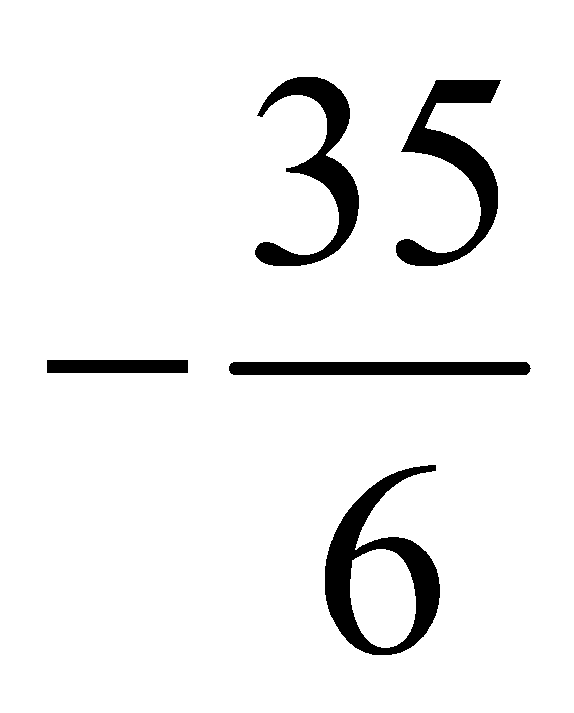
【分析】本题考查了有理乘法运算，熟练掌握有理数乘法法则是解题的关键；
（1）根据有理数乘法法则，同号为正，异号为负，并把绝对值相乘即可解答；
（2）根据有理数乘法法则，0乘以任何数都得0，即可解答；
（3）先化简绝对值，然后根据有理数乘法法则即可解答；
（4）先变形为分数形式，然后根据有理数乘法法则，同号为正，异号为负，并把绝对值相乘即可解答；
【详解】（1）解：
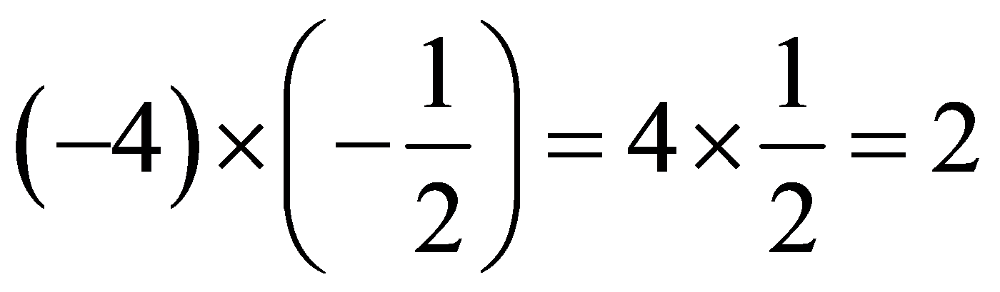
；（2）解：
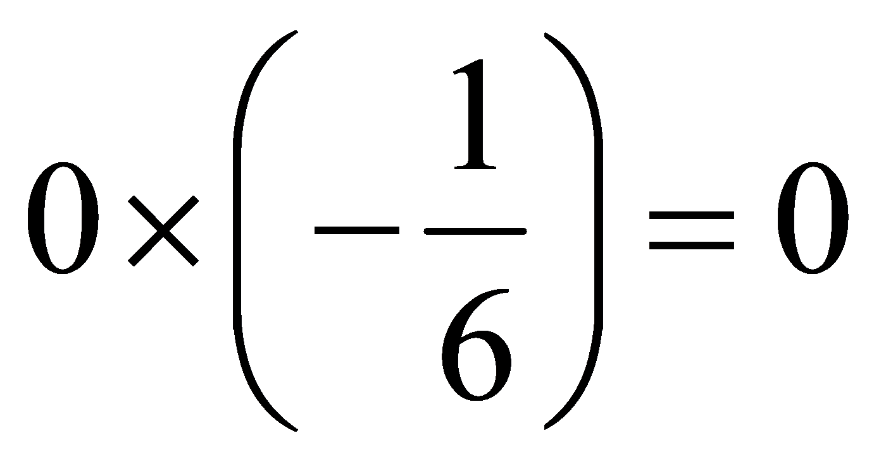
；（3）解：
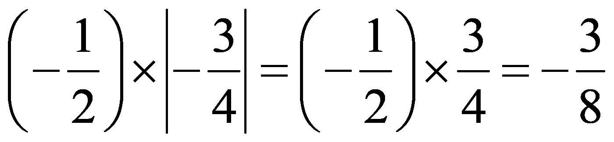
；（4）解：
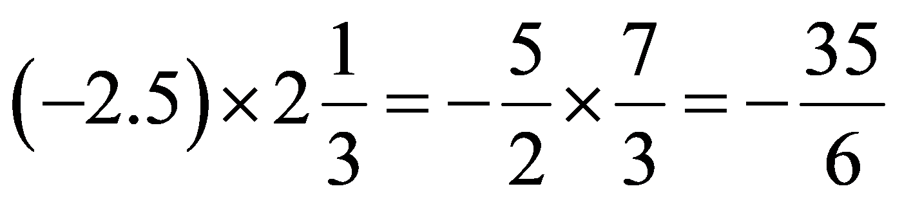
．【变式1】计算：
(1)
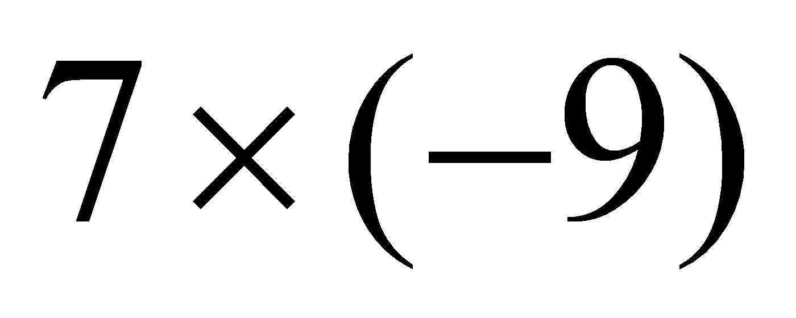
；(2) ；
；
(3)
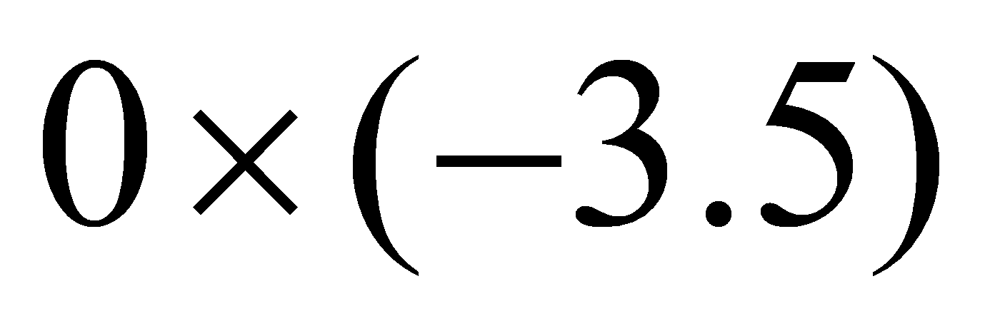
；(4) ；
；
(5) ；
；
(6) ．
．
【答案】(1)
(2)
(3)
(4)
(5)
(6)
【分析】（ ）根据有理数的乘法法则计算即可；
）根据有理数的乘法法则计算即可；
（ ）根据有理数的乘法法则计算即可；
）根据有理数的乘法法则计算即可；
（ ）根据有理数的乘法法则计算即可；
）根据有理数的乘法法则计算即可；
（ ）根据有理数的乘法法则计算即可；
）根据有理数的乘法法则计算即可；
（ ）根据有理数的乘法法则计算即可；
）根据有理数的乘法法则计算即可；
（ ）根据绝对值的性质和有理数的乘法法则计算即可；
）根据绝对值的性质和有理数的乘法法则计算即可；
本题考查了有理数的乘法，掌握有理数的乘法法则是解题的关键．
【详解】（1）解：原式
 ；
；
（2）解：原式
；
（3）解：原式 ；
；
（4）解：原式
 ；
；
（5）解：原式
；
（6）解：原式
．
【变式2】计算：
(1)；
(2)；
(3)；
(4) ．
．
【答案】(1)
(2)
(3)504
(4)
【分析】本题考查有理数的乘法，掌握有理数的乘法法则是解题的关键．
（1）根据有理数的乘法法则进行计算即可；
（2）根据有理数的乘法法则进行计算即可；
（3）根据有理数的乘法法则进行计算即可；
（4）根据有理数的乘法法则进行计算即可．
【详解】（1）解：原式
 ；
；
（2）解：原式
；
（3）解：原式
；
（4）解：原式
．
题型02 多个有理数的乘法运算
【典例2】计算： ．
．
【答案】
【分析】本题考查了有理数的乘法，先确定符号，再进行绝对值得运算，注意乘法运算时带分数化成假分数．
根据负因数的个数，可得积的符号，根据分子乘分子，分母乘分母，可得答案．
【详解】解：
 ．
．
【变式1】计算：
【答案】
【分析】此题考查了有理数的乘法，解题的关键是掌握以上运算法则．
根据有理数的乘法运算进行计算即可．
【详解】解：
．
【变式2】计算：
(1) ；
；
(2)；
(3)．
【答案】(1)
(2)
(3)
【分析】本题考查有理数的混合运算．
（1）根据乘法分配律计算即可；
（2）先利用加法交换律调整顺序，再利用乘法分配律计算即可
（3）根据有理数乘法的运算法则进行计算即可．
【详解】（1）解：
；
（2）解：
；
（3）解：
．
题型03 倒数
【典例3】 的倒数是 ．
的倒数是 ．
【答案】
【分析】本题主要考查倒数的定义，熟练掌握倒数的定义是解题的关键．根据乘积为1的两个数互为倒数，进行求解即可．
【详解】解：∵，
∴的倒数是．
故答案为：．
【变式1】 的倒数是 ．
的倒数是 ．
【答案】
【分析】本题主要考查了倒数的概念，熟练掌握基本概念是解题的关键．
先将带分数化为假分数，再将分子分母颠倒位置即可得到答案．
【详解】解：，
∴的倒数是，
故答案为：．
【变式2】 的倒数是 ；
的倒数是 ； 的相反数是 ；
的相反数是 ； 的绝对值是 ．
的绝对值是 ．
【答案】  4
4
【分析】本题考查了化简多重符号，绝对值，相反数，倒数的性质，先整理，，，然后结合倒数，相反数，绝对值等性质进行逐个解答即可．
【详解】解：∵，
则的倒数是，
∴的相反数是
，
∴的绝对值是，
故答案为：
题型04 有理数乘法运算律
【典例4】用简便方法计算：
(1)；
(2) ；
；
(3) ．
．
【答案】(1) ；
；
(2)；
(3)．
【分析】本题主要考查了有理数的混合运算及乘法分配律，正确掌握有理数乘法运算法则是关键．
（1）先将 化为
化为 ，再利用乘法分配律计算即可；
，再利用乘法分配律计算即可；
（2）利用乘法分配律进行计算即可；
（3）利用乘法分配律进行计算即可．
【详解】（1）解：；
（2）；
（3）．
【变式1】计算：能用简算的用简算
(1)；
(2) ．
．
【答案】(1)
(2)
【分析】本题考查乘法分配律，掌握运算法则是解题的关键．
（1）利用乘法分分配律的逆运算进先计算解答即可；
（2）把原式化为，然后运用乘法分配律解题即可．
【详解】（1）解：

；
（2）解：
．
【变式2】计算：
(1)
(2)
【答案】(1)0
(2)
【分析】本题考查了有理数的乘法和加减法的混合运算，正确计算是解题的关键．
（1）利用乘法分配律计算；
（2）利用乘法分配律计算．
【详解】（1）解：
；
（2）解：
．
题型05 有理数乘法的实际应用
【典例5】小车司机某天下午的运输全是在东西走向的高速公路上进行的，如果规定向东为正，向西为负，他这天下午行车里程 单位：千米
单位：千米 如下：
如下：
 ，，
，， ，，，
，，， ，，，
，，， ，
， ，
，
(1)司机这天最后到达目的地时，距离下午出车时的出发地多远？
(2)司机这天下午共行车多少千米？
(3)若每千米耗油 升，则这天下午司机用了多少升油？
升，则这天下午司机用了多少升油？
【答案】(1)师傅这天最后到达目的地时，距离下午出车时的出发地 千米；
千米；
(2)师傅这天下午共行车千米；
(3)这天下午师傅用了升油
【分析】本题考查了正负数的意义、有理数的加减的应用、有理数的乘法的应用，熟练掌握以上知识点并灵活运用是解此题的关键．
（1）把所有行车记录的里程相加，再根据正数和负数的意义解答；
（2）求出所有行车里程的绝对值的和；
（3）将（2）中的结果乘以即可．
【详解】（1）解：（千米），
答：师傅这天最后到达目的地时，距离下午出车时的出发地38千米；
（2）解：
（千米）
答：师傅这天下午共行车78千米；
（3）解：，
答：这天下午师傅用了升油．
【变式1】在佛山的一个以传统手工艺和自然美景著称的小镇上，有一个专门生产竹制品和陶瓷的工艺合作社．这个合作社计划每天生产200件．但由于工艺的复杂性和市场需求的波动，实际每天的生产量与计划量有所差异．下表是某周每天的生产情况（超产记为正，减产记为负）：
星期 | 一 | 二 | 三 | 四 | 五 | 六 | 日 |
增减产量 |
|
|
|
|
|
|
|


(1)由表可知该合作社星期三生产竹制品和陶瓷____________件；
(2)由表可知该厂本周生产竹制品和陶瓷多少件？
(3)合作社实行每日计件工资制，每生产一件产品可得60元，若超额完成任务，则超过部分每件奖励15元；少生产一件扣20元，那么合作社成员这一周的工资总额是多少元？
【答案】(1)195
(2)1408件
(3)84460元
【分析】本题考查了正数和负数、有理数的混合运算，结合已知条件列得正确的算式是解题的关键．
（1）根据正数和负数的实际意义列式计算即可；
（2）根据正数和负数的实际意义列式计算即可；
（3）根据产品数量算出生产产品的工资，再加上超额部分的奖励，减去少生产部分的总额，即可求解．
【详解】（1）解：（件），
即该合作社星期三生产竹制品和陶瓷件，
故答案为：；
（2）解：（件），
答：该厂本周生产竹制品和陶瓷件；
（3）解：（元），
超过的部分奖励总额为：（元），
扣款总额为：（元），
∴（元），
答：合作社成员这一周的工资总额是元．
【变式2】今年杜大伯在自家种植的地里采摘了7筐白萝卜，每筐的质量如下表（其中以每筐为标准，超过的千克数记作正数，不足的千克数记作负数，单位： ）．
）．
序号 | ① | ② | ③ | ④ | ⑤ | ⑥ | ⑦ |
图片 | |||||||
正（负）数 |
|
|
|
|


(1)质量最大的一筐比质量最小的一筐重多少千克？
(2)如果每千克白萝卜按1.2元出售，一共能卖多少钱？
【答案】(1)质量最大的一筐比质量最小的一筐重5.9千克
(2)一共能卖204元
【分析】本题考查了正负数的应用、有理数的混合运算的应用：
（1）利用超出质量最大减去超出质量最小即可；
（2）利用表格中的数据先计算超出或不足的质量，再加上7筐萝卜的标准质量即可求出总质量，再乘以萝卜的单价解答即可．
熟练掌握有理数的混合运算法则是解题的关键．
【详解】（1）解：，
答：质量最大的一筐比质量最小的一筐重5.9千克．
（2）解：
（元），
答：一共能卖204元．
题型06 有理数的除法运算
【典例6】计算：
(1) ；
；
(2) ；
；
(3) ．
．
【答案】(1)
(2)0
(3)
【分析】本题主要考查有理数的除法，掌握有理数除法的运算法则是解题的关键．
（1）将除法化为乘法，再计算即可；
（2）根据0除任何数都等于0，计算即可；
（3）根据有理数除法的运算法则计算即可．
【详解】（1）
．
（2）．
（3）
．
【变式1】计算：
(1) ；
；
(2) ；
；
(3) ；
；
(4)．
【答案】(1)5
(2)
(3)
(4)36
【分析】本题考查了有理数的除法，熟练掌握有理数除法计算法则是解答本题的关键．
（1）根据有理数除法法则，两数相除，同号得正，异号得负，并把绝对值相除；
（2）根据有理数除法法则，除以一个不等于0的数等于乘以这个数的倒数，即可解答；
（3）根据有理数除法法则，两数相除，同号得正，异号得负，并把绝对值相除；
（4）根据有理数除法法则，除以一个不等于0的数等于乘以这个数的倒数，即可解答；
【详解】（1）解：原式
；
（2）解：原式
 ；
；
（3）解：原式
 ；
；
（4）解：原式
 ．
．
【变式2】计算：
(1) ；
；
(2)；
(3)；
(4) ．
．
【答案】(1)0
(2)2
(3)-6
(4)2
【分析】此题考查了有理数的除法运算，根据有理数的除法运算法则求解即可．
【详解】（1）
；
（2）
 ；
；
（3）
；
（4）
．
题型07 有理数的乘除混合运算
【典例7】计算： ．
．
【答案】1
【分析】本题主要考查了有理数的乘除混合运算，
先确定结果的符号，再将除法变为乘法，按照顺序计算即可．
【详解】解：原式
 ．
．
【变式1】计算：
(1)；
(2) ．
．
【答案】(1)
(2)
【分析】本题主要考查有理数的混合运算，掌握有理数的混合运算的顺序和法则是解题的关键．
（1）根据有理数乘除混合运算法则计算即可；
（2）利用乘法分配律进行计算即可．
【详解】（1）
；
（2）
．
【变式2】计算：
(1)；
(2) ．
．
【答案】(1)；
(2)．
【分析】本题考查了有理数的乘除混合运算，解题的关键是∶
（1）先确定符号，除法转乘法，再计算即可；
（2）先确定符号，除法转乘法，再计算即可．
【详解】（1）解：；
（2）解： ．
．
题型08 有理数的乘除混合运算之新定义型问题
【典例8】如果对于任何有理数a，b定义运算“”如下： ，如
，如 ．
．
(1) ；
；
(2)求 的值．
的值．
【答案】(1)1
(2)
【分析】此题考查新定义运算，有理数的混合运算，掌握运算顺序与运算法则是解决问题的关键．
（1）按照规定的运算方法把式子改为有理数的混合运算，进而计算得出结果即可．
（2）按照规定的运算方法把式子改为有理数的混合运算，先计算括号内的运算，进而计算得出结果即可．
【详解】（1）解：，
∴
；
（2），
∴
，
∴
．
【变式1】定义一种新的运算：，如：，
求：
(1) ；
；
(2)．
【答案】(1)
(2)
【分析】此题考查了新定义运算和有理数的混合运算，弄清题中的新定义是解本题的关键．
（1）把原式利用题中的新定义计算转换为有理数运算，即可得到结果；
（2）先计算，求得，再计算，即可得到结果．
【详解】（1）解：由题意得：
；
（2）解：由题意得：
．
【变式2】若对于任意两数，定义一种运算“”，使得 ．
．
(1)求的值；
(2)试探索运算“”是否满足结合律，若满足，请证明；若不满足，请说明理由．
【答案】(1)
(2)满足结合律，见解析
【分析】本题主要考查有理数的混合运算，解答的关键是对相应的运算法则的掌握．
（1）把相应的值代入新定义的运算中，结合有理数的相应的运算法则进行运算即可；
（2）把相应的值进行结合律运算，再比较即可．
【详解】（1）解：
；
（2）解：已知，令，则．
将，代入运算规则可得：
，令，则．
将，代入运算规则可得：
因为，，所以，运算 “” 满足结合律．
题型09 有理数的除法中绝对值之分类讨论问题
【典例9】阅读下列材料：
 即当
即当 时，；当
时，；当 时，．
时，．
用这个结论可以解决下面问题：
(1)已知a，b是有理数，当 时，求的值；
时，求的值；
(2)已知a，b，c是有理数，当 时，求
时，求 的值．
的值．
【答案】(1) 或0
或0
(2) 或
或
【分析】本题考查了绝对值的化简，分类思想，有理数除法法则，熟练掌握分类思想，准确理解绝对值化简是解题的关键．
（1）根据题意，分类讨论：① ，
， ，②
，② ，
， ，进行计算即可得；
，进行计算即可得；
（2）根据题意可分，， 和，，
和，， ，和a，b，c两负一正和a，b，c两正一负，四种情形求解即可．
，和a，b，c两负一正和a，b，c两正一负，四种情形求解即可．
【详解】（1）解：已知a，b是有理数，当 时，
时，
①若，，则；
②若，，则；
③若a，b异号，则．
故 的值为或0；
的值为或0；
（2）解：已知a，b，c是有理数，当时，
①若，，，则；
②若，，，则；
③若a，b，c两负一正，则；
④若a，b，c两正一负，则．
故的值为或．
【变式1】探究题：阅读下列材料并解决有关问题．
我们知道 ，所以当时，；当时，
，所以当时，；当时， ．
．
请用上面的结论解决下列问题：
(1)已知 ，
， 是有理数，当
是有理数，当 时， ．
时， ．
(2)已知，， 是有理数，当
是有理数，当 时， ．
时， ．
(3)已知，，， 是有理数，当时，的最大值是 ．
是有理数，当时，的最大值是 ．
【答案】(1)
(2) 或
或
(3)
【分析】本题主要考查了绝对值的意义，
（1）根据，得出，或 ，，然后根据绝对值的意义化简绝对值即可；
，，然后根据绝对值的意义化简绝对值即可；
（2）根据，得出a、b、c中有3个负数或一负两正，然后根据绝对值的意义化简绝对值即可；
（3）根据，得出、、、中有1个或3个负数，然后根据绝对值的意义化简绝对值即可求解．
【详解】（1）解：∵，
∴a、b同号，即，或，，
∴或；
∴当时，；
故答案为：．
（2）解：∵，
∴a、b、c中有3个负数或两正一负，
当a、b、c都是负数时，；
当a、b、c中有两正一负时，设，；
∴时，的值为或；
故答案为：或．
（3）解：∵，
∴、、、中有1个或3个负数
设，
设，
∴的最大值是
【变式2】在解决数学问题的过程中，我们常用到“分类讨论”的数学思想，下面是运用分类讨论的数学思想解决问题的过程，请仔细阅读，并解答问题．
【提出问题】三个有理数a，b，c满足 ，求
，求 的值．
的值．
【解决问题】解：由题意得，a，b，c三个有理数都为正数或其中一个为正数，另两个为负数．
①若a，b，c都是正数，即，，时，则 ；
；
②若a，b，c中有一个为正数，另两个为负数时，不妨设，，，
 ，
，
综上所述，的值为3或．
【探究】请根据上面的解题思路解答下面的问题：
(1)三个有理数a，b，c满足，求的值；
(2)若a，b，c为三个不为0的有理数，且 ，求
，求 的值．
的值．
【答案】(1)或1
(2)
【分析】本题考查有理数混合运算，绝对值的意义．
（1）根据有理数乘法运算法则判断a，b，c的符号，然后根据绝对值的意义进行化简，注意分情况讨论；
（2）由题意得，a，b，c中有2个负数，1个正数，则，利用绝对值的意义可得结论．
【详解】（1）解：由题意得，a，b，c三个有理数都为负数或其中一个为负数，另两个为正数．
①若a，b，c都是负数，即，，时，
 ；
；
②若a，b，c中有一个为负数，另两个为正数时，
不妨设，，，
则，
综上所述，的值为或1．
（2）解：∵a，b，c为三个不为0的有理数，且，
∴a，b，c有2个负数，1个正数，
∴，
∴．

一、单选题
1．的倒数为（ ）
A．3 B． C．
C． D．
D．
【答案】B
【分析】本题主要考查了求一个数的倒数，乘积为1的两个数互为倒数，据此求解即可．
【详解】解：∵，
∴的倒数为，
故选：B．
2．下面算式错误的是（ ）
A． B．
C． D．
D．
【答案】A
【分析】本题考查有理数的运算，根据有理数的加减乘除法则，逐一进行判断即可．
【详解】解：A、，错误，符合题意；
B、，正确，不符合题意；
C、，正确，不符合题意；
D、，正确，不符合题意；
故选A．
3．若定义新运算 ，则计算
，则计算 的结果是（ ）
的结果是（ ）
A． B．
B． C．
C． D．
D．
【答案】C
【分析】本题考查的是定义新运算的题目，正确理解定义新运算的意义是解题的关键．根据定义的新运算，可得，根据有理数的乘法和减法法则计算即可求解．
【详解】解：∵，
∴，
故选：C．
4．实数a，b在数轴上的位置如图所示，下列结论正确的是（ ）
A． B．
B．
C． D．
【答案】B
【分析】此题考查了数轴与绝对值，有理数的运算，弄清数轴上点的位置是解本题的关键．根据数轴上点的位置判断，且 ，再进一步分析即可．
，再进一步分析即可．
【详解】解：由数轴上的点位置得：，且，
∴ ，，，
，，， ，
，
故选：B．
5．《九章算术》是中国古代第一部数学专著．它介绍了分数除以分数的另一种方法：先通分，再把分子直接相除．例如：．下面（ ）是采用这种方法计算的．
A． B．
B．
C． D．
D．
【答案】D
【分析】本题考查了分数除法的计算方法，根据《九章算术》的方法，分数除以分数需先通分使分母相同，再将分子直接相除，熟练掌握通分和分子直接相除的方法是解题的关键．通过以上知识点，逐个选项进行分析，判断是否符合此步骤．
【详解】解：选项A：将分数转化为小数后计算，未通分，不符合题意；
选项B：通过乘以倒数计算，属于常规分数除法，未通分，不符合题意；
选项C：通过分子分母同乘一个数使除数变为1，属于商不变规律的应用，未通分成同分母，不符合题意；
选项D：将 和通分为和，再直接相除分子9和8，完全符合题目所述方法；
和通分为和，再直接相除分子9和8，完全符合题目所述方法；
故选：D．
二、填空题
6．计算： ．
【答案】6
【分析】本题考查有理数除法，熟练掌握有理数除法法则是解题的关键．
根据有理数除法法则计算即可．
【详解】解：
故答案为：6．
7．若， ，，则a，b，c的大小关系是 ．
，，则a，b，c的大小关系是 ．
【答案】/
【分析】此题考查有理数的混合运算，化简绝对值，有理数的大小比较，先分别求出a，b，c的值，再比较大小即可
【详解】解：∵，，，
∴，
∵，,
∴，即，
故答案为：.
8．对非零有理数 ，
， 定义一种运算
定义一种运算 ，其规则是：
，其规则是： ，则
，则 ．
．
【答案】
【分析】此题考查了有理数的除法运算，根据新定义得到，进行计算即可．
【详解】解：∵，
∴，
故答案为：
9．有理数m、n对应点在数轴上的位置，若图所示，则下列关系中正确的有 （填写序号）．
① ；② ；③；④；⑤．
；③；④；⑤．
【答案】①③⑤
【分析】本题考查了数轴，有理数的大小比较等知识，由数轴可得 ，
， ，逐一判断即可，掌握相关知识是解题的关键．
，逐一判断即可，掌握相关知识是解题的关键．
【详解】解：由数轴可得：，，
∵，，
∴，故①符合题意；
∵，
∴，故②不符合题意；
∵，
∴， ，
，
又∵，
∴，故③符合题意；
∵，
∴ ，故④不符合题意；
，故④不符合题意；
∵，，
∴，故⑤符合题意；
综上，符合题意的有①③⑤，
故答案为：①③⑤．
10．定义：对于数对 ，如果
，如果 ，那么称为“和积等数对”．如：因为
，那么称为“和积等数对”．如：因为 ，
， ，所以
，所以 ，都是“和积等数对”．下列数对中，是“和积等数对”的是 ．（填序号）
，都是“和积等数对”．下列数对中，是“和积等数对”的是 ．（填序号）
①；② ；③
；③ ．
．
【答案】①③/③①
【分析】本题考查了“和积等数对”，有理数的加法和乘法，理解“和积等数对”的定义是解题的关键．
根据“和积等数对”的定义计算即可．
【详解】解∶ ①，是“和积等数对”；
②，不是“和积等数对”；
③ ，是“和积等数对”；
，是“和积等数对”；
故答案为：①③．
三、解答题
11．计算：
(1)
(2)
【答案】(1)
(2)
【分析】本题考查了有理数的乘除混合运算，解题的关键是掌握运算法则和运算顺序．
（1）根据有理数的乘除混合运算法则求解即可；
（2）根据有理数的乘除混合运算法则求解即可．
【详解】（1）解：
；
（2）解：
．
12．计算
(1)
(2)
【答案】(1)
(2)
【分析】本题主要考查了有理数混合运算，解题的关键是熟练掌握有理数混合运算法则，“先算乘方，再算乘除，最后算加减，有小括号的先算小括号里面的”．
（1）先变除法为乘法，然后再利用有理数乘法运算法则，进行计算即可；
（2）用乘法分配律进行计算即可．
【详解】（1）解：
；
（2）解：
 ．
．
13．计算：
(1) ；
；
(2) ；
；
(3)；
(4)．
【答案】(1) ；
；
(2) ；
；
(3) ；
；
(4)．
【分析】（ ）根据有理数的加法运算法则求解即可；
）根据有理数的加法运算法则求解即可；
（ ）根据有理数的乘除运算法则求解即可；
）根据有理数的乘除运算法则求解即可；
（ ）先把除法化为乘法，再根据有理数的乘法运算律求解即可；
）先把除法化为乘法，再根据有理数的乘法运算律求解即可；
（ ）根据有理数的乘法运算律逆运算求解即可；
）根据有理数的乘法运算律逆运算求解即可；
本题考查了有理数的运算和运算律，熟练掌握运算法则和运算律是解题的关键．
【详解】（1）解：原式
 ；
；
（2）解：原式
；
（3）解：原式
 ；
；
（4）解：原式
．
14．阅读下面解题过程：
计算：
解：原式 ①
 ②
②
 ． ③
． ③
(1)上面解题过程中有两处错误，第一处是第______步，错因是______，第二处是第______步，错因是______．
(2)请你写出这道题正确的解答过程．
【答案】(1)②；乘除法优先级一样，没有遵循从左往右的运算顺序；③；两数相除，同号为正；
(2)过程见解析，
【分析】本题主要考查了有理数乘除法计算：
（1）根据同级运算应从左到右的顺序依次进行计算以及两数相除，同号为正，即可得出答案；
（2）根据有理数的乘除法则进行计算即可．
【详解】（1）解：观察解题过程可知，第一处是第②步，错因是乘除法优先级一样，没有遵循从左往右的运算顺序，第二处是第③步，错因是两数相除，同号为正，
故答案为：②；乘除法优先级一样，没有遵循从左往右的运算顺序；③；两数相除，同号为正；
（2）解：
．
15．草莓是一种时令水果，不易保存．某水果店以每千克20元的价格购进20千克草莓，并以不同的价格把这20千克草莓陆续卖完．若以每千克30元的价格为标准价，将售价高于标准价记为正，低于标准价记为负，销售结果如下表：
售出数量/千克 | 1 | 8 | 2 | 4 | 5 |
售价/（元/千克） |
|
|
|
|
|


该水果店销售完这批草莓是赚了还是赔了？赚了或赔了多少元？（损耗忽略不计）
【答案】赚了，赚了191元
【分析】此题主要考查了正数和负数，有理数加减乘除的运算方法，根据总价 单价
单价 数量，分别求出按照不同价格售出的利润，再求和即可．
数量，分别求出按照不同价格售出的利润，再求和即可．
【详解】解：
（元），
答：该水果店销售完这批草莓是赚了，赚了191元．
16．数学老师熊老师在课堂上布置了一道思考题“计算”，小雷同学仔细思考了一番，用了一种不同的方法解决了这个问题，小雷同学的解法：
原式的倒数为，所以．
(1)根据倒数的定义我们知道，若 ，则
，则 ________．
________．
(2)请你运用小雷同学的解法解答下面的问题：
计算： ．
．
【答案】(1)；
(2) ．
．
【分析】本题考查了倒数，有理数加减运算，有理数乘法运算律，熟练掌握运算法则是解题的关键．
（）根据题意即可求解；
（）根据题意利用小雷解法先取原式的倒数，再转化为乘法，计算后再取倒数即可．
【详解】（1）解：∵，
∴，
故答案为：；
（2）解：原式的倒数为
 ，
，
∴ ．
．
17．有20箱猕猴桃，以每箱25千克为标准，超过成不足的部分分别用正、负数来表示，记录如下：
与标准质量的差（单位：千克） |
|
|
| 0 | 1 | 2.5 |
箱数 | 1 | 4 | 2 | 3 | 2 | 8 |

(1)与标准质量比较，20箱猕猴桃总计超过或不足多少千克？
(2)若猕猴桃每千克售价30元，则出售这20箱猕猴桃可卖多少元？
【答案】(1)与标准质量比较，20箱筐猕猴桃总计超过8千克
(2)出售这20箱猕猴桃可卖元
【分析】本题主要考查了有理数四则混合计算的实际应用，正确理解题意列出对应的式子求解是解题的关键．
（1）把这20筐猕猴桃的重量相加，如果结果为正数，则与标准质量相比是超过，若结果为负数，则与标准质量相比是不足，据此可得答案；
（2）根据销售额销售单价销售数量进行求解即可．
【详解】（1）解：
 （千克），
（千克），
∴与标准质量比较，20箱筐猕猴桃总计超过8千克；
（2）解：元，
∴出售这20箱猕猴桃可卖元．
18．在有理数的范围内，定义三个数之间的新运算“”， ，
，
例如．
(1)计算：；
(2)计算：；
(3)计算： ．
．
【答案】(1)10
(2)3
(3)
【分析】本题主要考查了有理数的混合运算、绝对值等知识点，将新定义的运用化成有理数的运算成为解题的关键．
（1）先将原式化成有理数的混合运算，然后运用绝对值和有理数混合运算法则计算即可；
（2）先将原式化成有理数的混合运算，然后运用绝对值和有理数混合运算法则计算即可；
（3）先将原式化成有理数的混合运算，然后运用绝对值和有理数混合运算法则计算即可．
【详解】（1）解：．
（2）解：．
（3）解：．